Getting started with Docker on MacOs
Short introduction
Docker has become quite popular in DevOps since it's release in 2013. In short, the tool is used to automate deployment of apps so it can work efficiently in different environments. The idea is that you can setup a development environment in Docker and then "ship" that environment to another person, say a software tester, inside a container, and be pretty sure your code will work pretty much the same.
Docker consists of four main components:
- The Docker client and server,
- Docker images,
- Docker containers, and
- The Docker registry.
Since the assingment is on operating systems, I will not go into great detail about the inner workings of docker, but in the tutorial I'll touch down on these components.
In the past I've setup and used Linux a few times, for fun/educational purposes. I've set it up natively or inside a virtual machine (or VitualBox). Now, although Docker will never quite be the same as using an OS natively, it's supposed to be superior in many ways to virtual machines.
Some of the pros of docker versus using a virtual machine, are among other things:
- It takes less memory space,
- There performance is better,
- It boots up faster,
- It's easier to setup on different OSs,
- Storage can be shared - so it takes less space on your hard-drive, and
- It's easier to scale up according to your needs!
One last thing: We'll be setting this up to use Node.js. There's a handy tool called "Express App Generator" which we'll be using for this.
Awesome, let's just dive into this.
Installing Docker
Just a short FYI. Docker requires users running macOS 10.14 or Later. Support for macOs 11.0 (Big Sur) is already here. At the moment Intel processors are only supported, meaning the new Macbooks with Apple's M1 silicon won't work, even with using Rosetta 2 binary translator. According to Dockers blog, work on M1 support has started.
Let's head over to Docker Hub and and download Docker Desktop for Mac. Once ready, open up the .dmg-file and simply drag'n'drop the Docker.app into the Applications folder. The installed app will take up 1.4 gb of space.
The first time you open up Docker after install, it will ask of some privleged access to work. Type in your passwork and Docker will automatically install the helper. You now need to re-open Docker. Next, you'll be greeted with a tutorial. It's a good idea to go through that quickly.
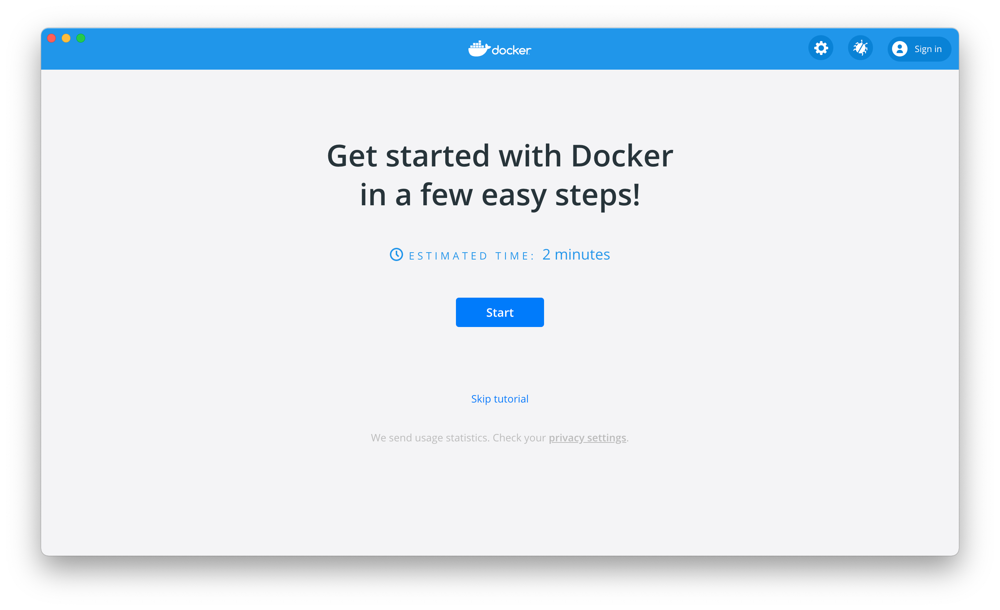One tip: If you click the gear-icon in the top, right corner you can tune how much of your system you'd like to allow Docker to use: how many CPUs, how much RAM, how much swap space (that can be used in pretending it has more RAM; whenever Docker runs out of physical memory it stores information on your hard-drive for later use), and finally how much disk-space it's allowed to use. I'm just gonna stick with the defaults for now.
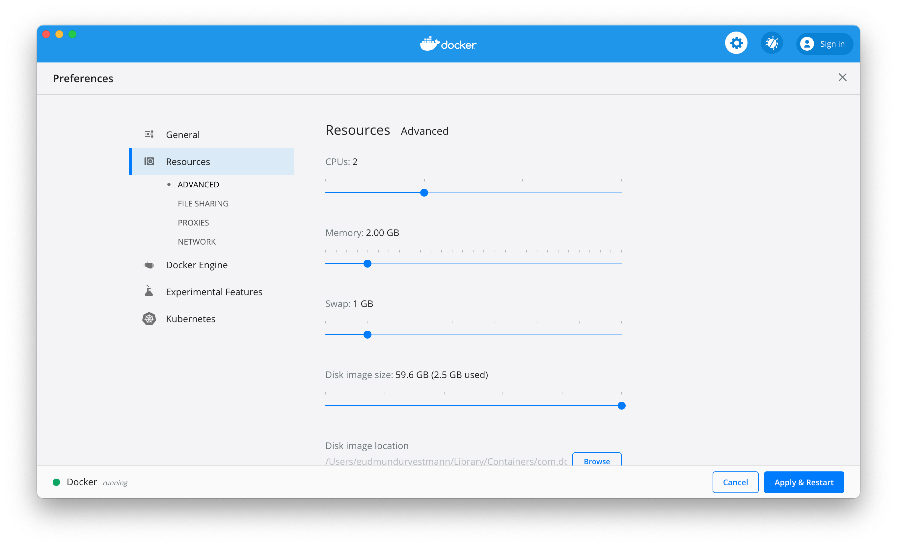Setting up the image
I'm gonna install the Express Generator globally, so I begin with typing in my terminal of choice:
npm install express-generator -g
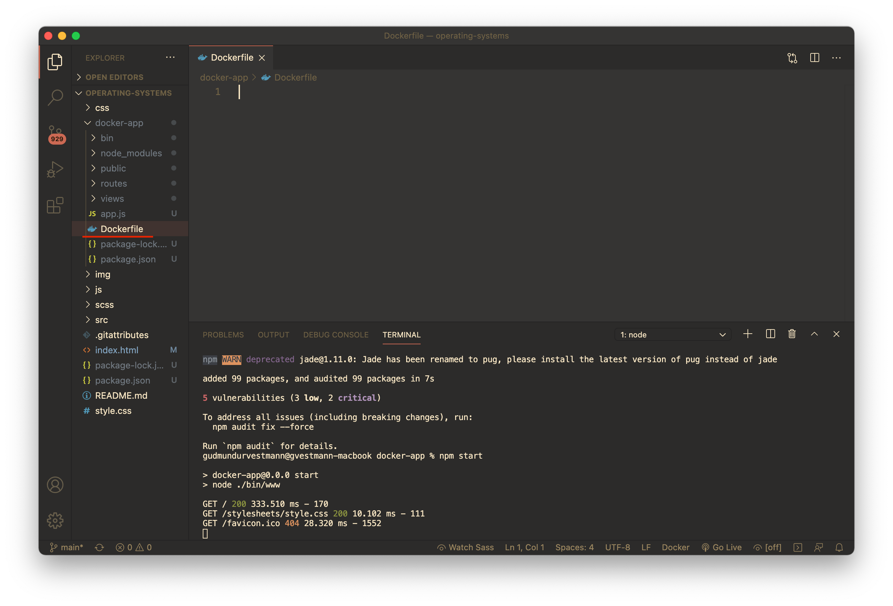
Next up, we'll create a Docker app. I'm just doing this in this repo's root folder. You can put it whenever you'd like.
express docker-app
At this point we must navigate to our docker-app folder. It should be as simple as typing at this point:
cd docker-app
We can't forget package dependencies ...
npm install
And finally, we'll fire up the application!
npm start
By now, you'll be able to access you app's frontend on http://localhost:3000
Make the Dockerfile
The Dockerfile is the "manuscript" for making the inner working of docker, well ... Work. Let's create this!
In the root directory of the Docker-app (where your pwd should be by now) we'll create a file, simply called Dockerfile (no fancy .file-name stuff).
Just like GIT, Docker has an "ignore-file", meaning: Here are some files and folders you Mr. Docker should not commit to my repo/dockerfile. This is ofcourse done to make things as small and fast as possible.
To do this, you create a file called .dockerignore and place it in the root directory of the docker-app, like this:
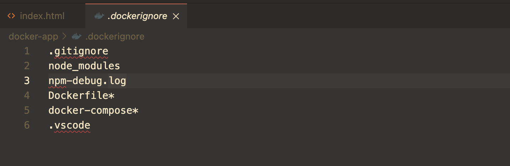... I also added some stuff to the file. Notice, the Dockerfile is actually included in there!
Last but not least: The base image!
In short: the base image is the OS that Docker run on top of. Usually it's a Linux distrobution such as Ubuntu (or other Debian variants), ArchLinux, Mint, Redhat, etc. However, as mentioned before, we'll be using Alpine Linux.
To setup our OS, we'll head to the Dockerfile again an add these two lines ouf code:
FROM node:10-alpine
This FROM line imports stuff to our Docker instance, and ATM we're using Alpine and Node from the Docker registry. Think of the registry as a GitHub for Dockerfiles. There are a bunch of "repos" there you can freely. And also. you can use the registry to upload your own Dockerfiles for the community or your team to use.
We also need to add some more stuff to the Dockerfile. In the end it will look like this:
# Filename: Dockerfile
FROM node:10-alpine
WORKDIR /usr/src/app
COPY package*.json ./
RUN npm install
COPY . .
EXPOSE 3000
CMD ["npm", "start"]
Expose 3000
CMD ["npm, install"]
Let's go through this ...
The first line is adding Alpine Linux.
The second one is the source path of Docker.
We then copy our package.json installed earlier to that said directory
Next step is installing our dependencies via "npm install". We're doing this because we want to keep our node_modules in the Docker directory for development and shippgin.
We then need to copy the stuff over to this Dockerfile's directory.
Next line to last is opening up a port (the pretty popular number 3000).
And at last, we add some command line promts to install our node_modules. That CMD line is in essence a script; the stuff withing the array, "npm + install" will be executed.
The last step
Last, but not least ... Let's add a tag to our images. This become very handy when dealing with many different images and makes it's easier to fire up that particular image.
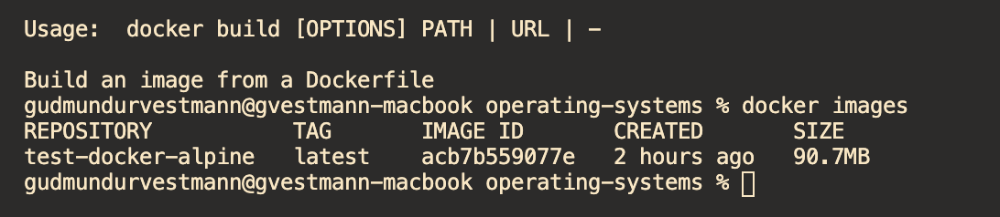Let's type into the terminal:
docker build -t whatever-you-like-to-name-it
I named it test-docker-alpine ...
Now type: docker images in the terminal. You'll be presented with something like this:
Let's run Docker
We will now run our freshly baked Dockerimage. To do that, we typy:
docker run acb7b559077e
Huh? acb7b559077e?
Well, that's MY image id. You'll ofcourse you YOUR image id. If you just switch that out, will get - et voila! - this:
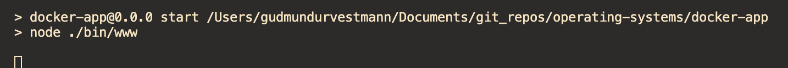BTW, when this happens you'll need to press CTRL + C to remove that none responsive terminal.
At this point, type:
docker exec -it "YOUR-- CONTAINER-ID" /bin/sh
But is it actually working? Well. Check out localhost. Just localhost in your browser of choice.
It should look like this ...
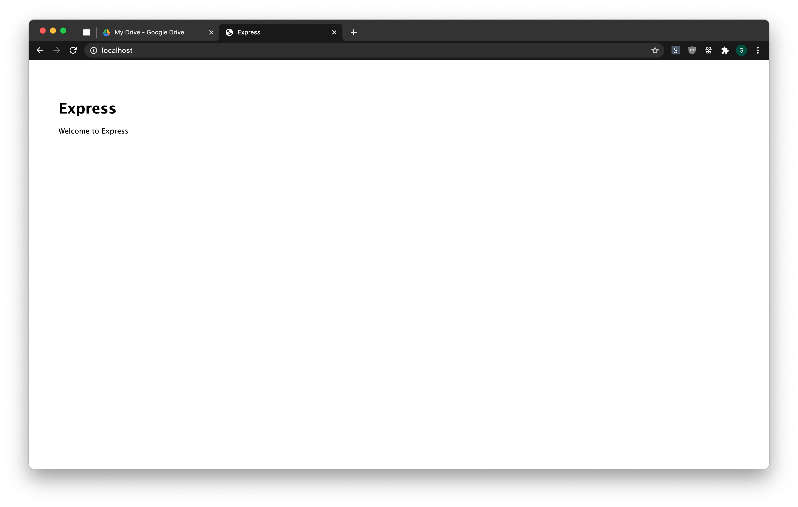And the Linux distro? Is it actually there?
Try typing: whoami
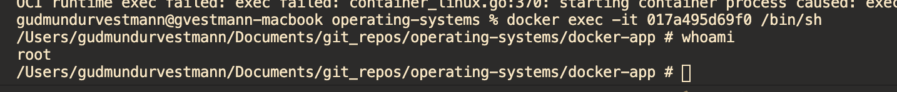That should look like this ... You should be "root" but not "your-username"
From now on, to run this Dockerfile, you'll need to remember the command
docker exec -it "YOUR-- CONTAINER-ID" /bin/sh
That will start your Docker container and easy the pain of working on your Node-application
To end with ...
Let's end this with having a short look on the computer's resources. Actually: this virtual machine's resources. If you type:
free
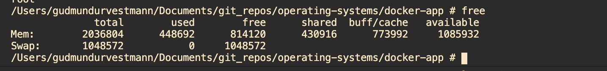
You have info on the RAM. Notice, it's the same amount of RAM we allowed the virtual machine to use in Docker's settings.
To check which kernel Alpinu is using, type:
uname -srm
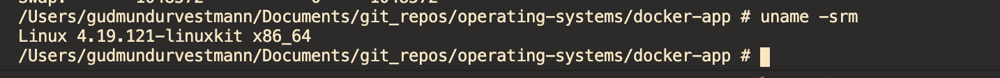
Alpine uses 4.19.212. It's not the latest; it's from the spring of 2019. The 4.19 version is widely used, so no worries.
For checking out the processes running on your VM, you can type (just like on other Linux distros:
top
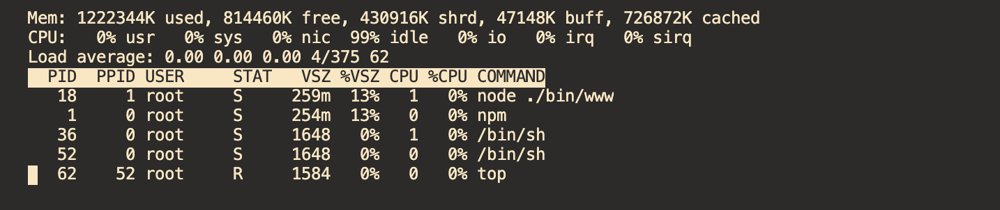
To kill a certain process, you type (using that particular process ID or PID):
kill PROCESSNUMBER
And finally, let's check the computer's CPU. Type:
cat /proc/cpuinfo
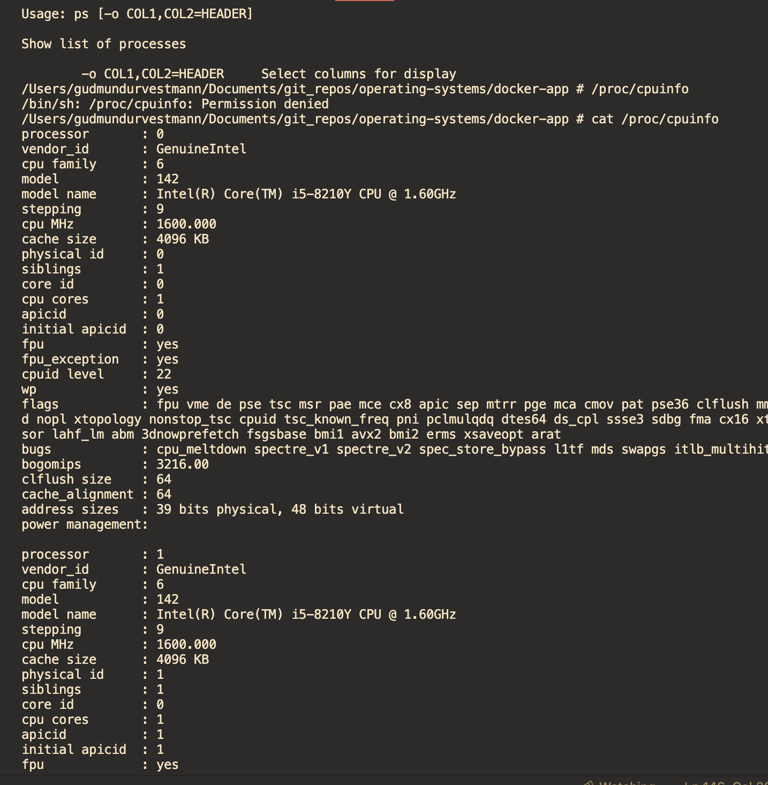
You can see, just like we allowed Docker, this VM uses 2 different CPU core
And finally, let's check the disk's memory usage:
df -h
Yeah, it's about 2.7 gb. I didn't limit Docker's disk usage, but obvoisly you can.
There we have it! Good luck on all your nerdy explolariton. Let's see where that takes us!